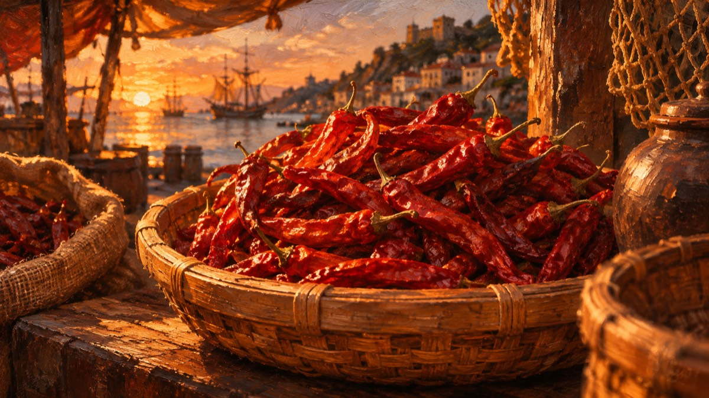

순례자의 한끼한밤
순례자의 한끼한밤우리가 먹는 빨간 떡볶이,
겨우 70살입니다.
오늘 저녁 식탁에 올라온 떡볶이를 떠올려 보세요. 당연히 빨갛죠. 김치도 빨갛고, 찌개도 빨갛고, 한국 음식 하면 떠오르는 색은 대부분 빨간색입니다.
그런데 시계를 500년쯤 거꾸로 돌리면, 이 식탁에서 빨간색이 통째로 사라집니다. 이 땅에 고추가 없었거든요.
고추 없던 시절, 김치는 하얀색
고추가 들어오기 전의 김치는 지금의 백김치에 가까웠습니다. 소금에 절인 채소에 산초, 마늘, 생강 같은 향신료로 맛을 냈죠. 매운맛이 필요하면 산초나 겨자를 썼습니다.
떡볶이도 마찬가지입니다. 옛 문헌과 궁중 음식에 남아 있는 떡볶이는 고기·채소와 함께 간장으로 볶은 음식, 지금 우리가 '궁중 떡볶이'라고 부르는 갈색 요리였습니다.
1492년, 콜럼버스의 착각
고추의 고향은 아메리카 대륙입니다. 1492년 대서양을 건넌 콜럼버스는 원래 인도의 후추를 찾으러 떠난 사람이었죠. 그런데 그곳에서 맛본 매운 열매를 후추의 한 종류로 여겼고, 그래서 스페인어로 고추를 지금도 후추와 같은 뿌리의 말(pimiento)로 부릅니다.
영어로 고추가 'chili pepper'인 것도 이 착각의 흔적입니다. 고추와 후추는 사실 전혀 다른 식물인데 말이죠.
포르투갈 상인의 배를 타고
유럽으로 건너간 고추를 아시아까지 실어 나른 건 당시 바닷길을 쥐고 있던 포르투갈 상인들이었습니다. 이들의 무역로를 따라가 보면 이렇습니다.
고추가 조선에 온 바닷길
고추가 정확히 어떤 길로 조선에 들어왔는지는 학자마다 의견이 조금씩 다릅니다. 다만 16세기 말, 일본을 거쳐 들어왔다는 것이 가장 널리 받아들여지는 설명입니다. 지구 반 바퀴를 도는 긴 항해였던 셈이죠.

1614년, 처음 기록된 이름 '왜겨자'
고추가 조선의 책에 처음 등장하는 건 1614년, 이수광이 쓴 백과사전 『지봉유설』입니다.
'남만'은 당시 남쪽 바다에서 온 서양인, 바로 포르투갈 사람들을 가리키던 말입니다. 이름에서부터 고추가 어디서 왔는지가 드러나는 셈이죠. 처음엔 먹거리라기보다 독이 있는 낯선 식물 취급을 받았습니다.
김치가 빨개지기까지 150년
고추가 들어왔다고 해서 김치가 바로 빨개진 건 아닙니다. 김치에 고추를 넣는 방법이 책에 처음 나오는 건 1766년, 『증보산림경제』에서입니다. 『지봉유설』로부터 약 150년이 지난 뒤였죠.
낯선 식물이 식탁의 주인공이 되기까지, 꼬박 다섯 세대가 걸린 겁니다.
그리고 1953년, 신당동
그렇다면 빨간 떡볶이는 언제 생겼을까요? 널리 알려진 이야기로는 한국전쟁 직후인 1953년, 서울 신당동입니다. 마복림 할머니가 고추장으로 버무린 떡볶이를 팔기 시작했고, 이것이 오늘날 빨간 떡볶이의 시작으로 꼽힙니다.
서울 신당동에서 고추장 떡볶이가 시작된 해.
빨간 떡볶이는 아직 일흔 살 남짓입니다.
2026년 기준으로 약 70년. 수백 년 된 음식 같지만, 빨간 떡볶이는 생각보다 훨씬 젊은 음식입니다.
한눈에 보는 연표
한눈에 보는 떡볶이의 길
- ~1500
조선에는 고추가 없음. 김치는 하얀색, 떡볶이는 간장 맛
- 1492
콜럼버스, 아메리카에서 고추를 만나 후추로 착각
- 16세기
포르투갈 상인의 바닷길을 따라 고추가 아시아로
- 16세기 말
일본을 거쳐 조선에 들어온 것으로 추정
- 1614
『지봉유설』에 '왜겨자'로 첫 기록
- 1766
『증보산림경제』에 고추 넣은 김치 등장
- 1953
신당동에서 고추장 떡볶이 시작
포르투갈 상인의 배가 없었다면,
떡볶이는 아직 갈색이었을지도 모릅니다.
For pilgrims passing by
Korea's famous red rice cakes, tteokbokki, were not always red. Chili peppers came from the Americas and reached Asia aboard Portuguese trading ships, arriving in Korea around the late 16th century. The first Korean record (1614) called it "Japanese mustard." Red kimchi appeared about 150 years later, and the spicy red tteokbokki we know today was born only in 1953, in Seoul's Sindang-dong. Without those Portuguese ships, it might still be brown.
참고한 기록
- 이수광, 『지봉유설』(1614) — 고추(남만초·왜겨자)에 대한 첫 기록
- 유중림, 『증보산림경제』(1766) — 김치에 고추를 넣는 방법이 처음 나오는 책
- 고추 전래 경로는 일본 경유설이 통설이며, 다른 견해도 있습니다
- 1953년 신당동 떡볶이는 널리 전해지는 이야기를 바탕으로 했습니다
한끼한밤 이야기
- 1화 · 떡볶이가 빨개진 건, 포르투갈 때문? (지금 읽는 글)
- 2화 · 400살 포르투갈 빵, 카스텔라
- 3화 · 에그타르트, 189년째 비밀
- 4화 · 순례자가 천 년 동안 가리비를 단 이유
- 5화 · '빵'은 포르투갈 말
- 6화 · 노란 화살표는 신부님이 그렸다
- 7화 · '덴푸라'는 일본말이 아니다
- 8화 · 순례길의 진짜 끝, 피스테라 0km
🕯️ 오늘 밤 이야기는 여기까지.
다음 이야기는, 카스텔라의 고향 포르투갈입니다.